Prep data
# devtools::install_github("derekmichaelwright/agData")
library(agData) # Loads: tidyverse, ggpubr, ggbeeswarm, ggrepel
library(gganimate)
library(transformr)
# Prep data
d1 <- read.csv("1710000901_databaseLoadingData.csv") %>%
select(Year=1, Area=GEO, Unit=UOM, Value=VALUE) %>%
mutate(Month = substr(Year, 6, 8),
Year = substr(Year, 1,4),
Year = as.numeric(Year),
Month = as.numeric(Month))
#
d2 <- read.csv("1710000501_databaseLoadingData.csv") %>%
select(Year=1, Area=GEO, Sex, Age=Age.group, Unit=UOM, Value=VALUE) %>%
mutate(Year = substr(Year, 1,4),
Year = as.numeric(Year))
#
d3 <- read.csv("1710000801_databaseLoadingData.csv") %>%
select(Year=1, Area=GEO, Measurement=Components.of.population.growth, Unit=UOM, Value=VALUE) %>%
mutate(Year = substr(Year, 1,4),
Year = as.numeric(Year))
Population
# Prep data
areas <- c("Canada", "Ontario", "Quebec", "New Brunswick", "Nova Scotia",
"Prince Edward Island", "Newfoundland and Labrador",
"British Columbia", "Alberta","Saskatchewan", "Manitoba",
"Yukon", "Northwest Territories including Nunavut",
"Northwest Territories", "Nunavut")
xx <- d1 %>% filter(Area %in% areas) %>%
mutate(Area = factor(Area, levels = areas))
# Plot
mp <- ggplot(xx, aes(x = Year, y = Value / 1000000, color = Area)) +
geom_line(size = 1) +
facet_wrap(Area ~ ., ncol = 4, scales = "free_y") +
theme_agData(legend.position = "none",
axis.text.x = element_text(angle = 45, hjust = 1)) +
labs(y = "Million People", x = NULL,
caption = "\xa9 www.dblogr.com/ | Data: STATCAN")
ggsave("canada_population_demographics_1_01.png", mp, width = 10, height = 6)
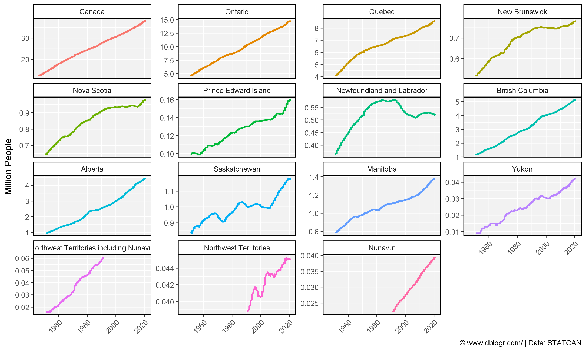
Population Pyramids
Create Plotting Functions
gg_PopDem_plot <- function(areas = "Saskatchewan", title = areas, years = 2019, anim = F) {
# Prep data
ages <- c("0 to 4 years", "5 to 9 years", "10 to 14 years", "15 to 19 years",
"20 to 24 years", "25 to 29 years", "30 to 34 years", "35 to 39 years",
"40 to 44 years", "45 to 49 years", "50 to 54 years", "55 to 59 years",
"60 to 64 years", "65 to 69 years", "70 to 74 years", "75 to 79 years",
"80 to 84 years", "85 to 89 years", "90 to 94 years", "95 to 99 years" ,
"100 years and over")
xx <- d2 %>%
filter(Area %in% areas, Year %in% years, Age %in% ages) %>%
mutate(Age = factor(Age, levels = ages),
Value = Value / 1000)
# Plot
mp <- ggplot(xx, aes(y = Value, x = Age, fill = Sex)) +
geom_bar(data = xx %>% filter(Sex == "Males"), stat = "identity", alpha = 0.8) +
geom_bar(data = xx %>% filter(Sex == "Females"),
aes(y = -Value), stat = "identity", alpha = 0.8) +
scale_fill_manual(values = c("deeppink3","darkblue"))
if(anim == T) { mp <- mp + facet_grid(. ~ Area) }
if(anim == F) { mp <- mp + facet_grid(. ~ Year) + labs(title = title) }
mp +
theme_agData(legend.position = "bottom",
axis.text.x = element_text(angle = 45, hjust = 1)) +
labs(x = NULL, y = "Thousand People",
caption = "\xa9 www.dblogr.com/ | Data: STATCAN") +
coord_cartesian(ylim = c(-max(xx$Value), max(xx$Value))) +
coord_flip()
}
gg_PopDem_anim <- function(areas = c("Saskatchewan", "Alberta")) {
gg_PopDem_plot(areas = areas, years = 1971:2019, anim = T) +
# Here comes the gganimate specific bits
labs(title = '{round(frame_time)}') +
transition_time(Year) +
ease_aes('linear')
}
Canada
mp <- gg_PopDem_plot(areas = "Canada", years = c(1971, 1980, 1990, 2000, 2020))
ggsave("canada_population_demographics_2_01.png", mp, width = 10, height = 4)
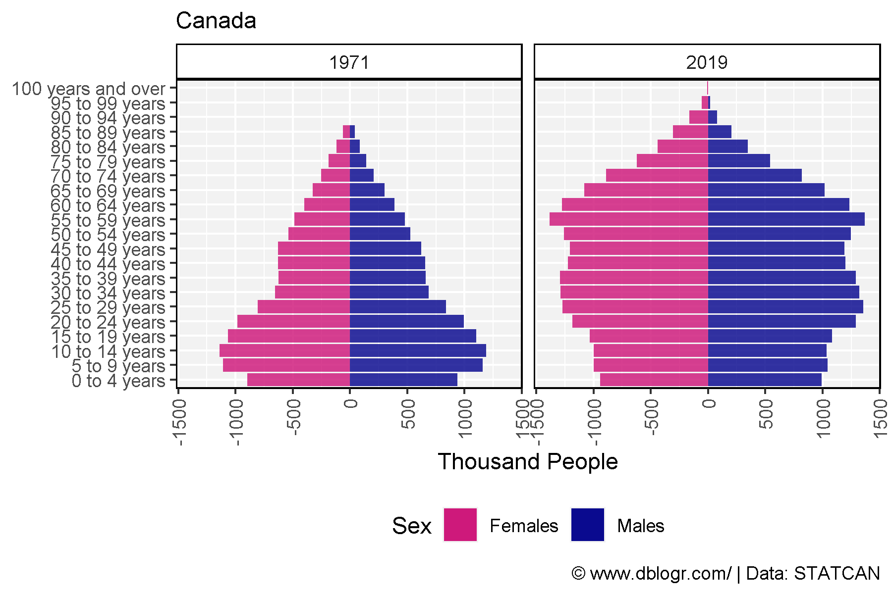
mp <- gg_PopDem_anim(areas = "Canada")
anim_save("canada_population_demographics_gif_2_01.gif", mp, width = 600, height = 400)
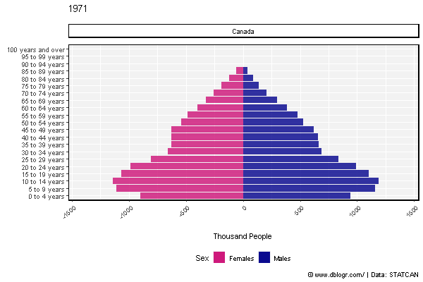
Eastern Canada
areas <- c("Ontario", "Quebec","New Brunswick", "Nova Scotia",
"Prince Edward Island", "Newfoundland and Labrador")
mp <- gg_PopDem_plot(areas = areas, title = "Eastern Canada",
years = c(1971, 1980, 1990, 2000, 2020))
ggsave("canada_population_demographics_2_02.png", mp, width = 10, height = 4)
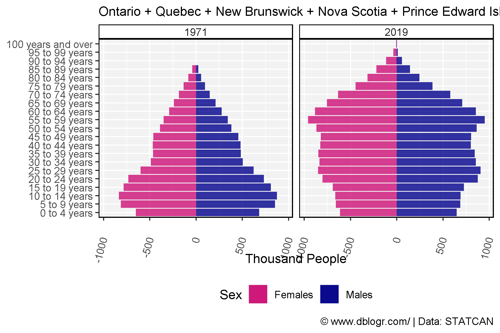
mp <- gg_PopDem_anim(areas = areas)
anim_save(paste0("canada_population_demographics_gif_2_02.gif"), mp, width = 600, height = 400)
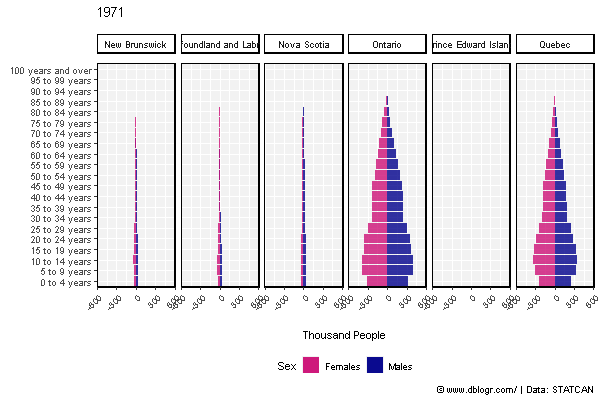
Western Canada
areas <- c("British Columbia", "Alberta","Saskatchewan", "Manitoba",
"Yukon", "Northwest Territories", "Nunavut")
mp <- gg_PopDem_plot(areas = areas, title = "Western Canada",
years = c(1971, 1980, 1990, 2000, 2020))
ggsave("canada_population_demographics_2_03.png", mp, width = 10, height = 4)
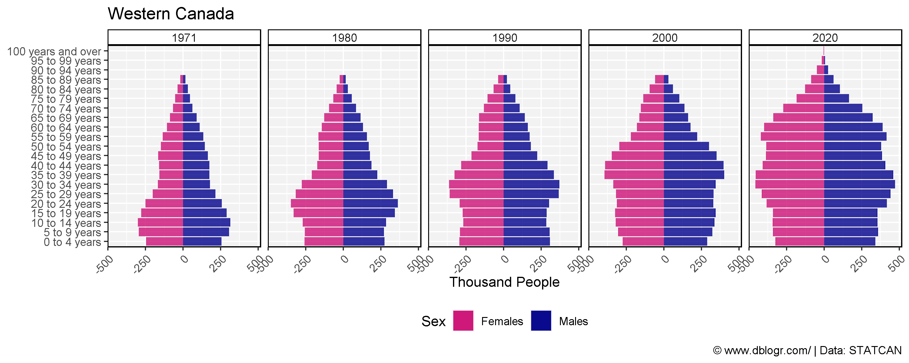
mp <- gg_PopDem_anim(areas = areas)
anim_save(paste0("canada_population_demographics_gif_2_03.gif"), mp, width = 600, height = 400)
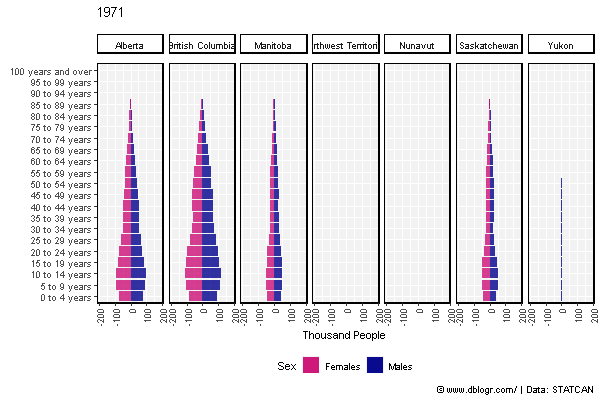
British Columbia
mp <- gg_PopDem_plot(areas = "British Columbia", years = c(1971, 1980, 1990, 2000, 2020))
ggsave("canada_population_demographics_2_04.png", mp, width = 10, height = 4)
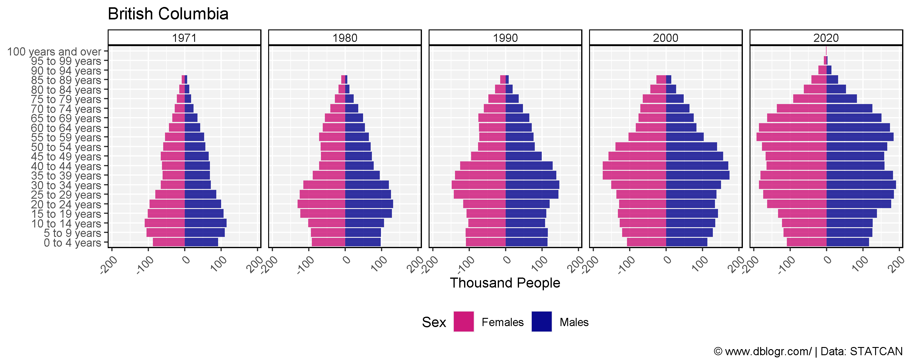
mp <- gg_PopDem_anim(areas = "British Columbia")
anim_save(paste0("canada_population_demographics_gif_2_04.gif"), mp, width = 600, height = 400)
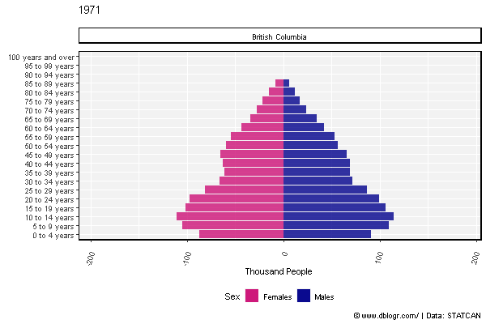
Alberta
mp <- gg_PopDem_plot(areas = "Alberta", years = c(1971, 1980, 1990, 2000, 2020))
ggsave("canada_population_demographics_2_05.png", mp, width = 10, height = 4)
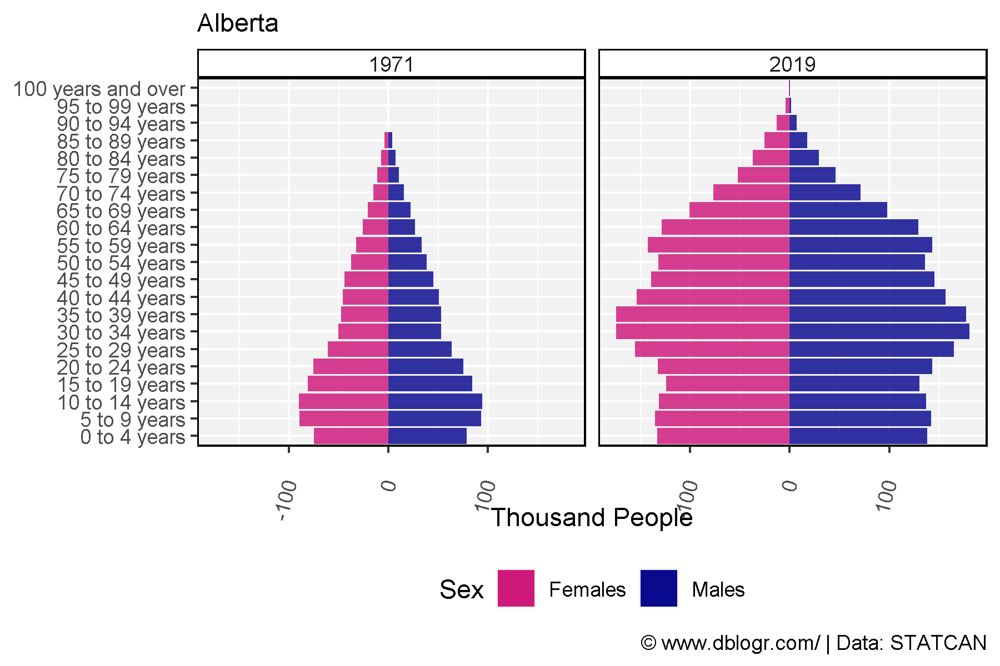
mp <- gg_PopDem_anim(areas = "Alberta")
anim_save(paste0("canada_population_demographics_gif_2_05.gif"), mp, width = 600, height = 400)
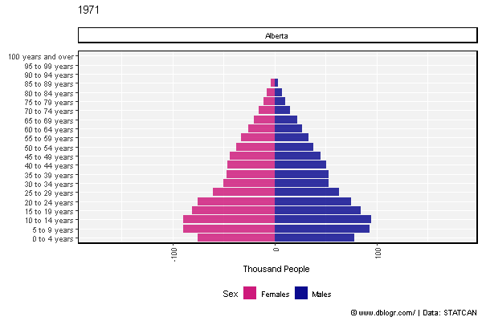
Saskatchewan
mp <- gg_PopDem_plot(areas = "Saskatchewan", years = c(1971, 1980, 1990, 2000, 2020))
ggsave("canada_population_demographics_2_06.png", mp, width = 10, height = 4)
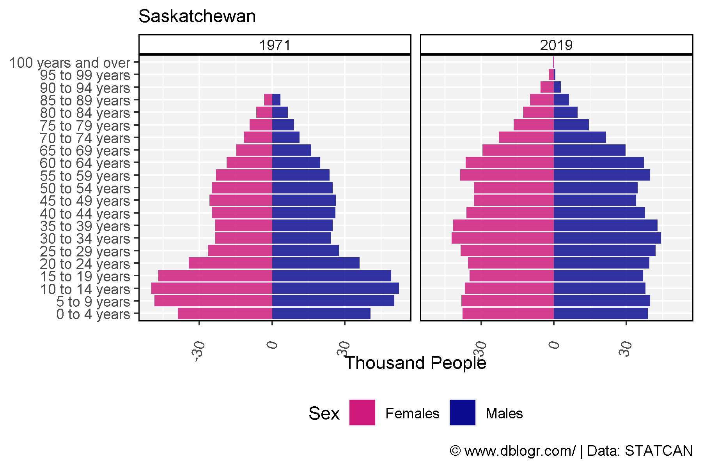
mp <- gg_PopDem_anim(areas = "Saskatchewan")
anim_save(paste0("canada_population_demographics_gif_2_06.gif"), mp, width = 600, height = 400)

Ontario
mp <- gg_PopDem_plot(areas = "Ontario", years = c(1971, 1980, 1990, 2000, 2020))
ggsave("canada_population_demographics_2_07.png", mp, width = 10, height = 4)
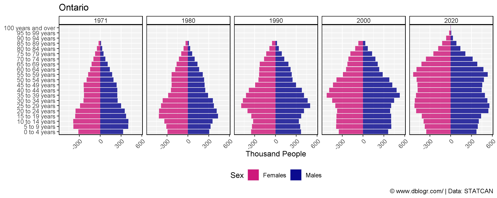
mp <- gg_PopDem_anim(areas = "Saskatchewan")
anim_save(paste0("canada_population_demographics_gif_2_07.gif"), mp, width = 600, height = 400)
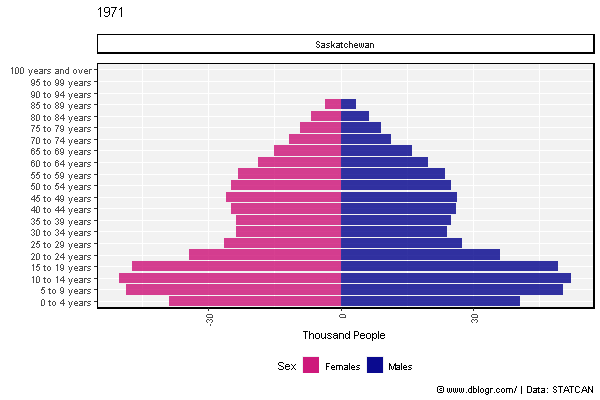
Line Graphs
# Prep data
ages <- c("0 to 4 years", "5 to 9 years", "10 to 14 years", "15 to 19 years",
"20 to 24 years", "25 to 29 years", "30 to 34 years", "35 to 39 years",
"40 to 44 years", "45 to 49 years", "50 to 54 years", "55 to 59 years",
"60 to 64 years", "65 to 69 years", "70 to 74 years", "75 to 79 years",
"80 to 84 years", "85 to 89 years", "90 to 94 years", "95 to 99 years" ,
"100 years and over")
xx <- d2 %>%
filter(Area == "Canada", Sex %in% c("Males","Females"), Age %in% ages) %>%
mutate(Age = factor(Age, levels = ages))
# Plot
mp <- ggplot(xx, aes(x = Year, y = Value / 1000000, color = Sex)) +
geom_line(size = 1, alpha = 0.8) +
facet_wrap(Age ~ ., scales = "free_y", ncol = 6) +
scale_color_manual(values = c("deeppink3","darkblue")) +
theme_agData(legend.position = "bottom",
axis.text.x = element_text(angle = 45, hjust = 1)) +
labs(y = "Million", x = NULL,
caption = "\xa9 www.dblogr.com/ | Data: STATCAN")
ggsave("canada_population_demographics_3_01.png", mp, width = 12, height = 6)
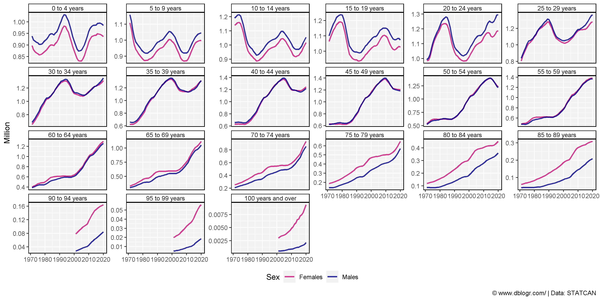
xx <- d2 %>%
filter(Area == "Canada", Sex %in% c("Males","Females"), Age %in% ages) %>%
mutate(Age = factor(Age, levels = ages))
# Plot
mp <- ggplot(xx, aes(x = Year, y = Value, color = Sex, group = Sex)) +
geom_line(size = 1, alpha = 0.8) +
scale_color_manual(values = c("deeppink3","darkblue")) +
theme_agData(legend.position = "bottom") +
labs(y = "Million", x = NULL,
caption = "\xa9 www.dblogr.com/ | Data: STATCAN") +
# Here comes the gganimate specific bits
labs(title = '{closest_state}') +
transition_states(Age, transition_length = 1, state_length = 1) +
ease_aes('linear')
anim_save("canada_population_demographics_gif_3_01.gif", mp, width = 600, height = 400)
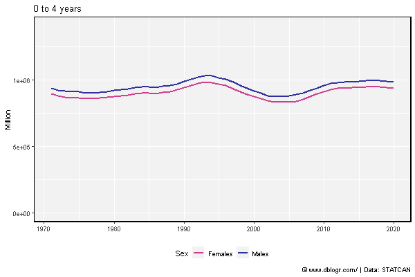
Immigration
# Prep data
areas <- c("Canada", "Ontario", "Quebec", "New Brunswick", "Nova Scotia",
"Prince Edward Island", "Newfoundland and Labrador",
"British Columbia", "Alberta","Saskatchewan", "Manitoba",
"Yukon", "Northwest Territories including Nunavut",
"Northwest Territories", "Nunavut")
colors <- c("darkgreen","black","darkred","darkblue")
measures <- c("Births", "Deaths", "Immigrants", "Emigrants")
xx <- d3 %>% filter(Measurement %in% measures) %>%
mutate(Area = factor(Area, levels = areas))
# Plot
mp <- ggplot(xx, aes(x = Year, y = Value / 1000, color = Measurement)) +
geom_line(size = 1, alpha = 0.8) +
facet_wrap(Area ~ ., ncol = 5, scales = "free_y") +
scale_color_manual(values = colors) +
theme_agData(legend.position = "bottom",
axis.text.x = element_text(angle = 45, hjust = 1)) +
labs(y = "Thousand People", x = NULL,
caption = "\xa9 www.dblogr.com/ | Data: STATCAN")
ggsave("canada_population_demographics_4_01.png", mp, width = 12, height = 6)
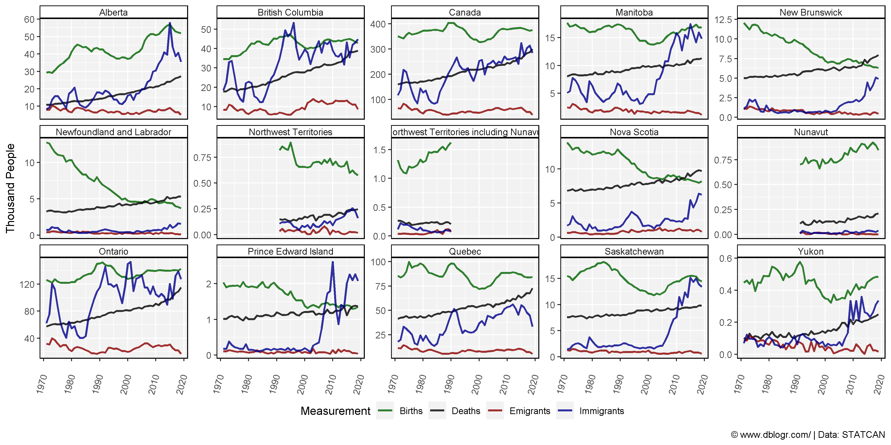
# Prep data
colors <- c("steelblue", "red", "darkorange", "darkblue", "darkgreen", "darkred")
areas <- c("Quebec", "Ontario", "British Columbia", "Alberta", "Saskatchewan", "Manitoba")
wings <- c("Left", "Left", "Left", "Right", "Right", "Right")
x1 <- d1 %>%
filter(Month == 1) %>%
select(Area, Year, Population=Value)
x2 <- d3 %>%
filter(Measurement == "Immigrants") %>%
select(Area, Year, Immigrants=Value)
xx <- left_join(x1, x2, by = c("Area", "Year")) %>%
filter(Area %in% areas, !is.na(Immigrants)) %>%
mutate(Value = 1000000 * Immigrants / Population,
Area = factor(Area, levels = areas),
Wing = plyr::mapvalues(Area, areas, wings))
# Plot
mp <- ggplot(xx, aes(x = Year, y = Value, color = Area)) +
geom_line(alpha = 0.2) +
geom_smooth(se = F) +
facet_grid(. ~ Wing) +
scale_x_continuous(breaks = seq(1975, 2015, 10)) +
scale_color_manual(values = colors) +
theme_agData() +
labs(title = "Immigration Rates", x = NULL,
y = "Immigrants per Million People",
caption = "\xa9 www.dblogr.com/ | Data: STATCAN")
ggsave("canada_population_demographics_4_02.png", mp, width = 8, height = 4)
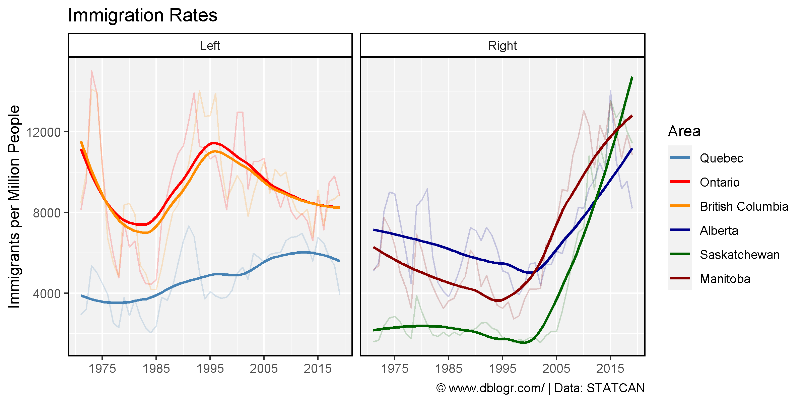
Births vs Deaths
# Prep data
xx <- d3 %>% filter(Area == "Saskatchewan", Measurement %in% c("Births","Deaths"))
# Plot
mp <- ggplot(xx, aes(x = Year, y = Value / 1000000, color = Measurement)) +
geom_line(size = 1.5, alpha = 0.8) +
scale_color_manual(values = c("darkblue", "darkred")) +
theme_agData() +
labs(title = "Population Dynamics in Saskatchewan, Canada",
y = "Million People", x = NULL,
caption = "\xa9 www.dblogr.com/ | Data: STATCAN")
ggsave("canada_population_demographics_5_01.png", mp, width = 6, height = 4)
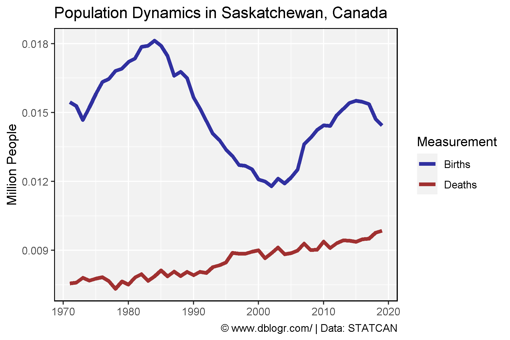
© Derek Michael Wright www.dblogr.com/